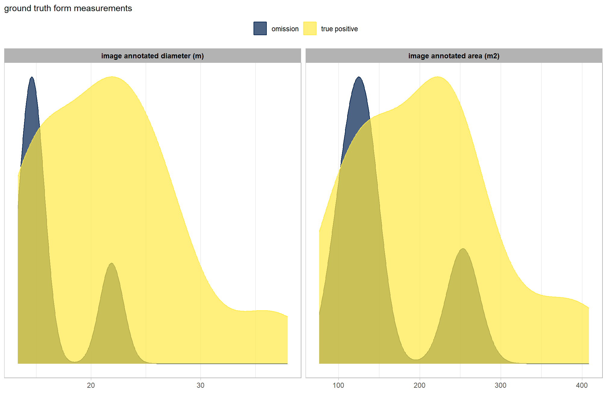
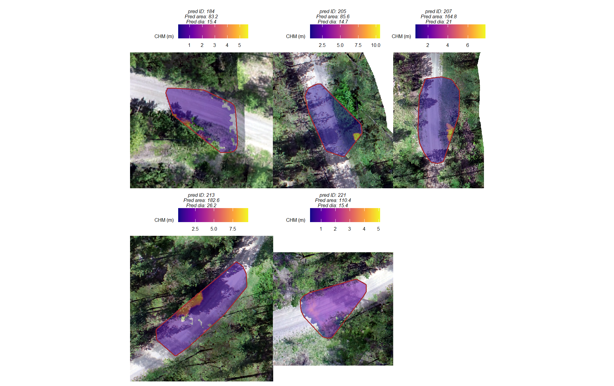
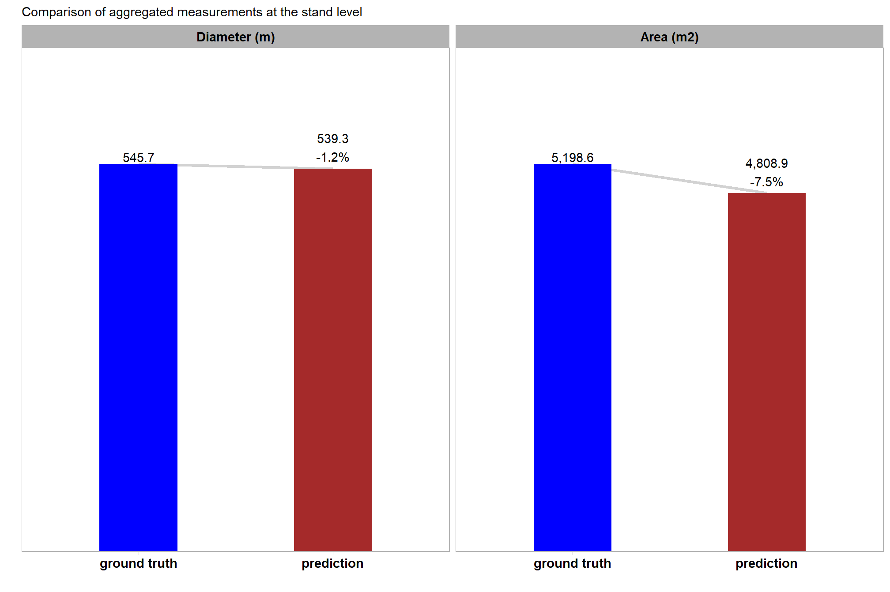

Section 11 Method Validation: BHEF Machine Piles
11.1 Site Introduction
Here, we’ll be working with a ponderosa pine evaluation site from the Black Hills Experimental Forest (BHEF) which will serve as a critical test of the slash pile detection methodology’s generalizability against massive machine piles. While ecologically similar to the training site, this location features a fundamentally different pile construction, resulting in massive machine piles that exhibit a high degree of geometric irregularity, with observed shapes ranging from circular to rectangular perimeters and numerous complex deviations. The treatment that created these piles occurred approximately two years prior to data collection. Based on local precipitation and forest type, significant tree regeneration is expected, which introduces a challenge for our spectral filtering methodology for minimizing false positives.
Given these novel structural and ecological conditions, the detection parameters will be adjusted from the training site’s optimal settings. For the BHEF site, parameter adjustments will focus on relaxing the geometric filters (e.g. circle_fit_iou_pct) to accommodate the varied footprints of these machine-built piles. We will rely on strict size and scale filters (e.g. min_ht_m and min_area_m2) to exclude smaller non-pile objects such as shrubs and trees. As with the Pinyon-Juniper site, image-annotated pile footprints will be used as ground truth data to calculate performance metrics (e.g., F-score and MAPE) to determine how well the methodology generalizes to these large, unprecedented, and structurally complex structures.
insert prescription detail
11.2 Data Processing
11.2.1 RGB Data
The RGB data is spread across many different files so we’ll need to read those files individually, adjust and standardize the resolution, and then mosaic them together
## function to change the resolution of RGB
change_res_fn <- function(
r
, my_res=1
, m = "bilinear"
# , ofile = tempfile(fileext = ".tif")
, ofile = NULL
){
r2 <- r
terra::res(r2) <- my_res
if(!inherits(ofile,"character")){
r2 <- terra::resample(r, r2, method = m)
}else{
r2 <- terra::resample(r, r2, method = m, filename=ofile, overwrite = T)
}
return(r2)
}
###############################################################
# read and compile RGB raster
###############################################################
las_dir_temp <- "F:/UAS_Collections/BHEF_202306" # where is the raw las and rgb data?
c2t_output_dir <- "../data/BHEF_202306/" # where do you want to save processed data to?
rgb_fnm_temp <- file.path(c2t_output_dir,"bhef_rgb.tif") # what should the compiled rgb be called?
if(!dir.exists(c2t_output_dir)){dir.create(c2t_output_dir, showWarnings = F)}
if(!file.exists(rgb_fnm_temp)){
# read list of orthos
ortho_list_temp <- list.files(
las_dir_temp
, pattern = ".*(_RGB|_RBG)\\.(tif|tiff)$"
, full.names = T, recursive = T
) %>%
purrr::map(function(x){terra::rast(x)})
## apply the change_res_fn
ortho_list_temp <- 1:length(ortho_list_temp) %>%
purrr::map(function(x){change_res_fn(ortho_list_temp[[x]], my_res=0.04)})
######## mosaic the raster list
bhef_rgb_rast <- terra::mosaic(
terra::sprc(ortho_list_temp)
, fun = "min" # min only thing that works
, filename = rgb_fnm_temp
, overwrite = T
)
# bhef_rgb_rast %>%
# terra::aggregate(fact = 2, na.rm=T, cores = lasR::half_cores()) %>%
# terra::plotRGB(r = 1, g = 2, b = 3, stretch = "hist", colNA = "transparent")
}else{
bhef_rgb_rast <- terra::rast(rgb_fnm_temp)
}
names(bhef_rgb_rast) <- c("red","green","blue","alpha")
terra::res(bhef_rgb_rast)## [1] 0.04 0.0411.2.2 Process Raw Point Cloud
We’ll use cloud2trees::cloud2raster() to process the raw point cloud data
# output dir
dir_temp <- file.path(c2t_output_dir, "point_cloud_processing_delivery")
# check out the point cloud data really quick
# list.files(normalizePath(las_dir_temp), pattern = ".*\\.(laz|las)$", full.names = TRUE, recursive = T)
las_flist_temp <- c(
"F:\\UAS_Collections\\BHEF_202306/Unit1and3Processing.files/BHEF_202306_Unit1and3_laz.laz"
, "F:\\UAS_Collections\\BHEF_202306/Unit2Processing.files/BHEF_202306_Unit2_laz.laz"
, "F:\\UAS_Collections\\BHEF_202306/Unit4Processing.files/BHEF_202306_Unit4_laz.laz"
, "F:\\UAS_Collections\\BHEF_202306/Unit5Processing.files/BHEF_202306_Unit5_laz.laz"
, "F:\\UAS_Collections\\BHEF_202306/Unit6Processing.files/BHEF_202306_Unit6_laz.laz"
, "F:\\UAS_Collections\\BHEF_202306/Unit7Processing.files/BHEF_202306_Unit7_laz.laz"
, "F:\\UAS_Collections\\BHEF_202306/Unit8Processing.files/BHEF_202306_Unit8_laz.laz"
)
# read header with catalog
lidR::readLAScatalog(las_flist_temp)## class : LAScatalog (v1.2 format 2)
## extent : 608233.4, 610968.2, 4888216, 4889418 (xmin, xmax, ymin, ymax)
## coord. ref. : NAD83 / UTM zone 13N
## area : 3.94 km²
## points : 1.63 billion points
## type : airborne
## density : 412.5 points/m²
## density : 412.5 pulses/m²
## num. files : 7# do it
if(!dir.exists(dir_temp)){
# ctg_temp <- lidR::readLAScatalog(las_flist_temp)
# ctg_temp@data %>% dplyr::glimpse()
# remove(ctg_temp)
# gc()
# cloud2trees
cloud2raster_ans <- cloud2trees::cloud2raster(
output_dir = c2t_output_dir
, input_las_dir = las_flist_temp
, accuracy_level = 2
, keep_intrmdt = F
, dtm_res_m = 0.2
, chm_res_m = 0.1
, min_height = 0 # effectively generates a DSM based on non-ground points
)
# cloud2raster_ans$chm_rast
# pc_ext_temp <- sf::st_read(file.path(c2t_output_dir,"point_cloud_processing_delivery","raw_las_ctg_info.gpkg"))
}else{
dtm_temp <- terra::rast( file.path(dir_temp, "dtm_0.2m.tif") )
chm_temp <- terra::rast( file.path(dir_temp, paste0("chm_", 0.1,"m.tif")) )
cloud2raster_ans <- list(
"dtm_rast" = dtm_temp
, "chm_rast" = chm_temp
)
}
# huh?
cloud2raster_ans## $dtm_rast
## class : SpatRaster
## size : 6006, 13674, 1 (nrow, ncol, nlyr)
## resolution : 0.2, 0.2 (x, y)
## extent : 608233.4, 610968.2, 4888216, 4889418 (xmin, xmax, ymin, ymax)
## coord. ref. : NAD83 / UTM zone 13N (EPSG:26913)
## source : dtm_0.2m.tif
## name : 1_dtm_0.2m
## min value : 1633.414
## max value : 1736.891
##
## $chm_rast
## class : SpatRaster
## size : 12011, 27348, 1 (nrow, ncol, nlyr)
## resolution : 0.1, 0.1 (x, y)
## extent : 608233.4, 610968.2, 4888217, 4889418 (xmin, xmax, ymin, ymax)
## coord. ref. : NAD83 / UTM zone 13N (EPSG:26913)
## source : chm_0.1m.tif
## name : focal_mean
## min value : 0.00
## max value : 31.9811.2.3 Vector Data
cloud2trees::cloud2raster() wrote out a file with the spatial coverage of the point cloud data, let’s read that in.
# pc extent
pc_ext_temp <- sf::st_read(file.path(c2t_output_dir,"point_cloud_processing_delivery","raw_las_ctg_info.gpkg"), quiet=T) %>%
sf::st_union() %>%
# inward buffer to remove edge effects
sf::st_buffer(-15)
# mapview::mapview(pc_ext_temp)what is the area of the point cloud extent we are looking over?
sf::st_area(pc_ext_temp) %>%
as.numeric() %>%
`/`(10000) %>%
scales::comma(suffix = " ha", accuracy = 0.01)## [1] "278.36 ha"read in the treatment unit boundaries
###############################################################
# read unit boundary
###############################################################
bhef_stand_boundary <- sf::st_read("../data/BHEF_202306/bhef_harvests.gpkg", quiet=T) %>%
dplyr::rename_with(tolower) %>%
dplyr::rename_with(stringr::str_squish) %>%
dplyr::rename_with(make.names) %>%
dplyr::rename_with(~stringr::str_replace_all(.x, "\\.{2,}", ".")) %>%
dplyr::rename_with(~stringr::str_remove(.x, "\\.$")) %>%
dplyr::rename_with(~stringr::str_replace_all(.x, "\\.", "_")) %>%
dplyr::filter(
year_id == 2021
& !(treatment_type_grp %in% c("Improvement/Liberation Cut", "Other", "Sanitation Cut"))
& suid %in% c("0203088082660004000","0203088082660003000") # these were the only units with machine piles in prescription
) %>%
sf::st_transform(sf::st_crs(pc_ext_temp))now we need to make sure our point cloud data and treatment unit data overlap. we only want to analyze treatment units that have full coverage of point cloud data
how does this all line up?
# how does this compare to the unit boundaries?
ggplot2::ggplot() +
ggplot2::geom_sf(
data = bhef_stand_boundary
, mapping = ggplot2::aes(color = "treatments")
, fill = NA, lwd = 2
) +
ggplot2::geom_sf(
data = pc_ext_temp
, mapping = ggplot2::aes(color = "point cloud ext.")
, fill = NA, lwd = 2
) +
ggplot2::scale_color_manual(values = c("gold2","cyan2"),name="") +
ggplot2::scale_x_continuous(NULL,breaks = NULL) +
ggplot2::scale_y_continuous(NULL,breaks = NULL) +
ggplot2::theme_void() +
ggplot2::theme(legend.position = "top")
let’s keep only the units that have full coverage from the point cloud data after buffering the units to reduce edge effects
# get indices of those entierly covered by pc ext
covered_indices_temp <- sf::st_covered_by(
x = bhef_stand_boundary %>% sf::st_buffer(15)
, y = pc_ext_temp
, sparse = FALSE
)
# convert the logical matrix to a single logical vector, since we want to keep an x polygon if it is covered by any of the polygons in y
is_covered_temp <- rowSums(covered_indices_temp) > 0
# subset to keep only the covered polygons
# nrow(bhef_stand_boundary)
bhef_stand_boundary <- bhef_stand_boundary %>%
dplyr::slice(
which(is_covered_temp)
)
# sf::st_union()
# nrow(bhef_stand_boundary)what did we get?
# how does this compare to the unit boundaries?
ggplot2::ggplot() +
ggplot2::geom_sf(
data = bhef_stand_boundary
, mapping = ggplot2::aes(color = "treatments")
, fill = NA, lwd = 2
) +
ggplot2::geom_sf(
data = pc_ext_temp
, mapping = ggplot2::aes(color = "point cloud ext.")
, fill = NA, lwd = 2
) +
ggplot2::scale_color_manual(values = c("gold2","cyan2"),name="") +
ggplot2::scale_x_continuous(NULL,breaks = NULL) +
ggplot2::scale_y_continuous(NULL,breaks = NULL) +
ggplot2::theme_void() +
ggplot2::theme(legend.position = "top")
what is the area of the treatment unit boundaries we are looking over?
bhef_stand_boundary %>%
sf::st_union() %>%
sf::st_area() %>%
as.numeric() %>%
`/`(10000) %>%
scales::comma(suffix = " ha", accuracy = 0.1)## [1] "103.1 ha"that’s great
The perimeter of each pile was digitized in a Geographic Information System (GIS) overlaid on a 0.04 m RGB orthomosaic. In this digitization process, the perimeter was based on the main footprint of the pile at ground level, excluding isolated logs or debris extending beyond the primary boundary. These ground truth polygons will be compared to the predicted pile boundaries using the intersection over union (IoU) metric, with a minimum threshold required for a true positive match.
load in the pile boundary polygons.
# read in polys
bhef_slash_piles_polys <-
sf::st_read("../data/BHEF_202306/piles/bhef_pile_polys.shp", quiet=T) %>%
# sf::st_as_sf() %>%
dplyr::rename_with(tolower) %>%
dplyr::mutate(
pile_id = dplyr::row_number()
, treeID = dplyr::row_number()
) %>%
cloud2trees::simplify_multipolygon_crowns() %>%
dplyr::select(-c(treeID)) %>%
sf::st_make_valid() %>%
dplyr::filter(sf::st_is_valid(.)) %>%
# calculate area and volume
dplyr::mutate(
image_gt_area_m2 = sf::st_area(.) %>% as.numeric()
) %>%
# area
st_calculate_diameter() %>%
dplyr::rename(
image_gt_diameter_m = diameter_m
) %>%
sf::st_transform(sf::st_crs(pc_ext_temp))
# add a flag for if a pile is in the stand or not based on a spatial intersection
bhef_slash_piles_polys <- bhef_slash_piles_polys %>%
dplyr::left_join(
bhef_slash_piles_polys %>%
sf::st_intersection(
bhef_stand_boundary %>%
sf::st_union() %>%
sf::st_transform(sf::st_crs(bhef_slash_piles_polys))
) %>%
sf::st_drop_geometry() %>%
dplyr::distinct(pile_id) %>%
dplyr::mutate(is_in_stand=T)
, by = "pile_id"
) %>%
dplyr::mutate(is_in_stand=dplyr::coalesce(is_in_stand, F))huh?
## Rows: 26
## Columns: 7
## $ shape_leng <dbl> 46.62793, 48.54183, 52.30751, 51.47470, 66.51802, …
## $ shape_area <dbl> 76.30865, 133.64823, 144.94465, 135.03140, 220.586…
## $ pile_id <int> 1, 2, 3, 4, 5, 6, 7, 8, 9, 10, 11, 12, 13, 14, 15,…
## $ image_gt_area_m2 <dbl> 76.03950, 133.30759, 144.67638, 134.76650, 220.403…
## $ geometry <POLYGON [m]> POLYGON ((608553.4 4889262,..., POLYGON ((…
## $ image_gt_diameter_m <dbl> 15.27058, 14.95721, 16.11087, 14.77658, 20.57680, …
## $ is_in_stand <lgl> TRUE, TRUE, TRUE, TRUE, TRUE, TRUE, TRUE, TRUE, TR…map
# option to put satellite imagery as base layer of mapview maps
mapview::mapviewOptions(
homebutton = FALSE
# , basemaps = c("Esri.WorldImagery","OpenStreetMap")
, basemaps = c("Esri.WorldImagery","OpenStreetMap")
)
# map it
mapview::mapview(
bhef_stand_boundary %>%
sf::st_union()
, color = "black"
, lwd = 1
, alpha.regions = 0
, label = FALSE
, legend = FALSE
, popup = FALSE
, layer.name = "stand boundary"
) +
# mapview::mapview(bhef_slash_piles_points, zcol = "height_m")
mapview::mapview(bhef_slash_piles_polys, zcol = "image_gt_area_m2",layer.name="machine piles")we’ll work with the CHM in the study unit boundary plus a buffer to limit the amount of data we process
Given the expected massive size of these piles, we utilize a slightly coarser CHM resolution, aggregating the raster to 0.15m. This is sufficient detail for identification and quantification of large objects, and previous analysis of the training data indicated that this 0.15m resolution provided similarly high detection and form quantification accuracies as the finer 0.1m CHM.
first, we’ll borrow from the cloud2trees codebase to get a function to change the resolution of a raster exactly
###___________________________________________###
# adjust the resolution of a raster to be in exactly the target resolution
###___________________________________________###
adjust_raster_resolution <- function(
raster_object
, target_resolution
, fun = mean
, resample_method = "bilinear"
, ofile = NULL
) {
# check if the input is a spatraster object
if (!inherits(raster_object, "SpatRaster")) {
stop("Input must be a SpatRaster object.")
}
current_resolution <- terra::res(raster_object)[1] # get current resolution (assuming square pixels)
result_raster <- NULL
# aggregating (decreasing resolution)
if (target_resolution > current_resolution) {
# calculate the aggregation factor
# we aim for an integer factor for aggregate, but then refine with resample
fact <- max(1, floor(target_resolution / current_resolution))
# aggregate the raster
if(inherits(ofile,"character")){
aggregated_raster <- terra::aggregate(raster_object, fact = fact, fun = fun, filename = ofile, overwrite = TRUE)
}else{
aggregated_raster <- terra::aggregate(raster_object, fact = fact, fun = fun)
}
result_raster <- aggregated_raster
}else if(target_resolution < current_resolution) {
# disaggregating (increasing resolution)
# calculate the disaggregation factor
# we aim for an integer factor for disaggregate, but then refine with resample
fact <- max(1, floor(current_resolution / target_resolution)) # round down to ensure disagg factor is not too large
# disaggregate the raster
if(inherits(ofile,"character")){
disaggregated_raster <- terra::disagg(raster_object, fact = fact, filename = ofile, overwrite = TRUE)
}else{
disaggregated_raster <- terra::disagg(raster_object, fact = fact)
}
result_raster <- disaggregated_raster
}else if(target_resolution == current_resolution){
return(raster_object)
} else {
stop("this resolution is unresovable D: ")
}
# check if the resulting resolution is exactly the target resolution
if (abs(terra::res(result_raster)[1] - target_resolution) > 0.0001) { # Using a small tolerance for comparison
message("the initial aggregation/disaggregation did not result in the exact target resolution. resampling to achieve the precise target resolution.")
# create a dummy raster with the desired resolution and extent for resampling
template_raster <- terra::rast(result_raster)
terra::res(template_raster) <- target_resolution
# resample the result_raster to the exact target resolution
if(inherits(ofile,"character")){
result_raster <- terra::resample(result_raster, template_raster, method = resample_method, filename = tempfile(fileext = ".tif"), overwrite = TRUE)
terra::writeRaster(result_raster, filename = ofile, overwrite=T)
}else{
result_raster <- terra::resample(result_raster, template_raster, method = resample_method)
}
}
return(result_raster)
}###############################################################
# crop/mask RGB raster
###############################################################
rgb_fnm_temp <- "../data/BHEF_202306/bhef_rgb_small.tif"
if(!file.exists(rgb_fnm_temp)){
# Crop the raster to the rectangular extent of the polygon
# Specify a filename to ensure the result is written to disk
crop_rgb_rast_temp <- bhef_rgb_rast %>%
terra::crop(
bhef_stand_boundary %>%
sf::st_union() %>%
sf::st_buffer(10) %>%
terra::vect() %>%
terra::project(terra::crs(bhef_rgb_rast))
, filename = tempfile(fileext = ".tif")
, overwrite = TRUE
)
# Mask the cropped raster to the precise shape of the polygon
# This function will also be processed on disk due to the file size
bhef_rgb_rast <- terra::mask(
crop_rgb_rast_temp
, bhef_stand_boundary %>%
sf::st_union() %>%
sf::st_buffer(10) %>%
terra::vect() %>%
terra::project(terra::crs(bhef_rgb_rast))
, filename = tempfile(fileext = ".tif")
, overwrite = TRUE
)
## apply the change_res_fn for our analysis we don't need such finery
# this takes too long...
bhef_rgb_rast <- change_res_fn(bhef_rgb_rast, my_res=0.08, ofile = rgb_fnm_temp)
}else{
bhef_rgb_rast <- terra::rast(rgb_fnm_temp)
}
# terra::res(bhef_rgb_rast)
# terra::plotRGB(bhef_rgb_rast, stretch="lin")
# terra::plot(
# bhef_stand_boundary %>%
# terra::vect() %>%
# terra::project(terra::crs(bhef_rgb_rast))
# , add = T, border = "black", col = NA, lwd = 1.2
# )
# terra::plot(
# bhef_slash_piles_polys %>%
# terra::vect() %>%
# terra::project(terra::crs(bhef_rgb_rast))
# , add = T, border = "blue", col = NA, lwd = 1.2
# )
# terra::inMemory(bhef_rgb_rast)
###############################################################
# crop/mask CHM raster
###############################################################
chm_fnm_temp <- "../data/BHEF_202306/bhef_chm_small.tif"
if(!file.exists(chm_fnm_temp)){
# Crop the raster to the rectangular extent of the polygon
# Specify a filename to ensure the result is written to disk
crop_chm_rast_temp <- cloud2raster_ans$chm_rast %>%
terra::crop(
bhef_stand_boundary %>%
sf::st_union() %>%
sf::st_buffer(10) %>%
terra::vect() %>%
terra::project(terra::crs(cloud2raster_ans$chm_rast))
, filename = tempfile(fileext = ".tif")
, overwrite = TRUE
)
# Mask the cropped raster to the precise shape of the polygon
# This function will also be processed on disk due to the file size
chm_rast_stand <- terra::mask(
crop_chm_rast_temp
, bhef_stand_boundary %>%
sf::st_union() %>%
sf::st_buffer(10) %>%
terra::vect() %>%
terra::project(terra::crs(cloud2raster_ans$chm_rast))
, filename = tempfile(fileext = ".tif")
, overwrite = TRUE
)
# aggregate
chm_rast_stand <- adjust_raster_resolution(chm_rast_stand, target_resolution = 0.15, ofile = chm_fnm_temp)
}else{
chm_rast_stand <- terra::rast(chm_fnm_temp)
}
# put raster in memory
# chm_rast_stand <- chm_rast_stand*1
# terra::inMemory(chm_rast_stand)
# # huh?
# chm_rast_stand %>%
# terra::aggregate(fact = 2, na.rm=T, cores = lasR::half_cores()) %>%
# terra::plot(col = viridis::plasma(100), axes = F)
# terra::plot(
# bhef_stand_boundary %>%
# terra::vect() %>%
# terra::project(terra::crs(cloud2raster_ans$chm_rast))
# , add = T, border = "black", col = NA, lwd = 1.2
# )
# terra::plot(
# bhef_slash_piles_polys %>%
# terra::vect() %>%
# terra::project(terra::crs(cloud2raster_ans$chm_rast))
# , add = T, border = "blue", col = NA, lwd = 1.2
# )11.3 Pile Detection: Data Fusion
since we have both structural and spectral data, we’ll start by using the data fusion approach and do a full walk-through of our detection results
11.3.1 Structural Candidate Segments
we’ll start by detecting candidate slash piles based on the structural CHM data alone with our slash_pile_detect_watershed() function we defined in this earlier section.
the treatment prescription for the unit of interest called for…
insert prescription description
To apply the detection methodology to the massive machine pile site, we first set the four primary structural parameters (min_ht_m, max_ht_m, min_area_m2, and max_area_m2) based on expectations derived from the specific treatment prescription and its implementation on the ground. These parameters, along with the two shape filters, are used to define the expected pile geometric form.
Onsite observations indicated that these piles are uniformly massive, leading us to rely on strict size and scale filters to exclude smaller non-pile objects like shrubs and boulders. To establish these thresholds, we utilized familiar objects as anchors for contextualizing scale: a standard US parking spot is approximately 16.7 square meters, with maneuvering space increasing the footprint up to 26.7 square meters; common human heights range from approximately 1.61 m (average adult female) to 1.75 m (average adult male).
The geometric filters are critical for distinguishing man-made piles from naturally irregular canopy clumps, especially given the observed variability in pile perimeter (from circular to rectangular). Because we do not expect machine piles to adhere to a circular shape, we disregard the circularity check entirely by setting the circle_fit_iou_pct to zero (‘0’) and instead rely on the convexity_pct filter to identify regular-shaped segments that would be consistent with a man-made objects. The convexity_pct filter ensures the smoothness of the segment’s boundary by removing objects that are too irregularly shaped with many inward angles and also ensures that the candidate segment does not have internal holes (i.e., is not shaped like a doughnut), which would typically indicate that the object’s top has been removed by the CHM height thresholding (or “slice”).
The specific structural and geometric settings used are:
- Height and Area Filters (Scale-based):
max_ht_m= 4.0 (more than twice the height of an average adult male)min_ht_m= 1.5 (almost the average adult female height)min_area_m2= 54 (two large parking spaces)max_area_m2= 432 (16 large parking spaces)
- Geometric Filters (Shape-based):
circle_fit_iou_pct= 0 (disregards circularity, round piles are not expected)convexity_pct= 0.14 (filters out highly irregular segments, set to the training-optimization value for the given CHM resolution)
As noted above, we will also use a slightly coarser CHM resolution than we used for the training data and Pinyon-Juniper validation site. Given the expected massive size of these piles, we utilize a slightly coarser CHM resolution, aggregating the raster to 0.15m. This is sufficient detail for identification and quantification of large objects, and our previous analysis of the training data indicated that this 0.15m resolution provided similarly high detection and form quantification accuracies as the finer 0.1m CHM.
Finally, recognizing the prolific tree regeneration in this ecosystem, which can result in large, dense, and continuous tree clumps, we will rely on spectral filtering to help discriminate between genuine large piles and aggregated vegetation that might otherwise appear as a singular object in the CHM. To achieve this, the spectral_weight parameter will be set to its maximum setting of ‘5’ (which applies all of the five spectral thresholds) based on the expectation of incorrect detection of clumped small trees using the structural data.
slash_pile_detect_watershed() that CHM
outdir_temp <- "../data/BHEF_202306/"
fnm_temp <- file.path(outdir_temp,"bhef_structural_candidate_segments.gpkg")
if(!file.exists(fnm_temp)){
set.seed(22)
# we'll process each stand separately and bring the segments together
slash_pile_detect_watershed_ans <-
1:nrow(bhef_stand_boundary) %>%
rev() %>%
purrr::map(
function(x){
# crop to boundary
chm_temp <- chm_rast_stand %>%
terra::crop(
bhef_stand_boundary %>%
dplyr::slice(x) %>%
sf::st_buffer(5) %>%
sf::st_transform(terra::crs(chm_rast_stand)) %>%
terra::vect()
) %>%
terra::mask(
bhef_stand_boundary %>%
dplyr::slice(x) %>%
sf::st_buffer(5) %>%
sf::st_transform(terra::crs(chm_rast_stand)) %>%
terra::vect()
)
# get in my memory
chm_temp <- chm_temp*1
# slash_pile_detect_watershed
ans_temp <- slash_pile_detect_watershed(
chm_rast = chm_temp
#### height and area thresholds for the detected piles
# these should be based on data from the literature or expectations based on the prescription
, max_ht_m = 4 # set the max expected pile height
, min_ht_m = 1.5 # set the min expected pile height
, min_area_m2 = (27*2) # 66 # set the min expected pile area
, max_area_m2 = (27*16) # 444 # set the max expected pile area
#### irregularity filtering
# 1 = perfectly convex (no inward angles); 0 = so many inward angles
# values closer to 1 remove more irregular segments;
# values closer to 0 keep more irregular segments (and also regular segments)
# these will all be further filtered for their circularity and later smoothed to remove blocky edges
# and most inward angles by applying a convex hull to the original detected segment
, convexity_pct = 0.14 # min required overlap between the predicted pile and the convex hull of the predicted pile
#### circularity filtering
# 1 = perfectly circular; 0 = not circular (e.g. linear) but also circular
# min required IoU between the predicted pile and the best fit circle of the predicted pile
, circle_fit_iou_pct = 0
#### shape refinement & overlap removal
## smooth_segs = T ... convex hulls of raster detected segments are returned, any that overlap are removed
## smooth_segs = F ... raster detected segments are returned (blocky) if they meet all prior rules
, smooth_segs = T
)
return(ans_temp)
}
) %>%
dplyr::bind_rows() %>%
dplyr::mutate(pred_id = dplyr::row_number())
# save
slash_pile_detect_watershed_ans %>% sf::st_write(fnm_temp, append = F)
}else{
slash_pile_detect_watershed_ans <- sf::st_read(fnm_temp, quiet=T)
}
# what did we get?
slash_pile_detect_watershed_ans %>% dplyr::glimpse()## Rows: 303
## Columns: 8
## $ pred_id <int> 1, 2, 3, 4, 5, 6, 7, 8, 9, 10, 11, 12, 13, 14, 15, 16,…
## $ area_m2 <dbl> 357.1650, 373.4325, 186.5025, 347.5013, 375.1312, 185.…
## $ volume_m3 <dbl> 1082.1780, 986.4124, 404.8439, 1050.6005, 974.9271, 41…
## $ max_height_m <dbl> 3.999975, 3.999148, 3.991482, 3.999136, 4.000000, 3.99…
## $ volume_per_area <dbl> 3.0299105, 2.6414743, 2.1707159, 3.0233000, 2.5988961,…
## $ pct_chull <dbl> 0.4918105, 0.6169187, 0.6529135, 0.3911425, 0.5213375,…
## $ diameter_m <dbl> 32.60111, 26.64137, 19.20234, 26.96831, 28.31148, 22.6…
## $ geom <POLYGON [m]> POLYGON ((608427.5 4888468,..., POLYGON ((6086…11.3.2 Accuracy of these structural settings
let’s quickly look at the accuracy of the pile detection if we were to only use the structural data to identify piles with these specific settings.
note, that if we only had structural data, we would be much more restrictive in setting the pile detection parameters as we’ll demonstrate below.
we aren’t going to fully discuss this accuracy assessment, it is presented only for the curious
# add filter for those in stand
# pred
struct_temp <- slash_pile_detect_watershed_ans %>%
dplyr::left_join(
slash_pile_detect_watershed_ans %>%
sf::st_intersection(
bhef_stand_boundary %>%
sf::st_union() %>%
sf::st_transform(sf::st_crs(slash_pile_detect_watershed_ans))
) %>%
sf::st_drop_geometry() %>%
dplyr::distinct(pred_id) %>%
dplyr::mutate(is_in_stand=T)
, by = "pred_id"
) %>%
dplyr::mutate(is_in_stand=dplyr::coalesce(is_in_stand, F))
# ground truth and prediction matching process
gt_pred_match_temp <- ground_truth_prediction_match(
ground_truth =
bhef_slash_piles_polys %>%
dplyr::filter(is_in_stand) %>%
dplyr::arrange(desc(image_gt_diameter_m)) %>%
sf::st_transform(sf::st_crs(struct_temp))
, gt_id = "pile_id"
, predictions = struct_temp %>% dplyr::filter(is_in_stand)
, pred_id = "pred_id"
, min_iou_pct = 0.05
)
# add data from gt and pred piles
gt_pred_match_temp <-
gt_pred_match_temp %>%
# add area of gt
dplyr::left_join(
bhef_slash_piles_polys %>%
sf::st_drop_geometry() %>%
dplyr::filter(is_in_stand) %>%
dplyr::select(
pile_id
, image_gt_area_m2
, image_gt_diameter_m
) %>%
dplyr::rename(
gt_diameter_m = image_gt_diameter_m
, gt_area_m2 = image_gt_area_m2
) %>%
dplyr::mutate(pile_id=as.numeric(pile_id))
, by = "pile_id"
) %>%
# add info from predictions
dplyr::left_join(
struct_temp %>%
sf::st_drop_geometry() %>%
dplyr::select(
pred_id
, area_m2, volume_m3, max_height_m, diameter_m
) %>%
dplyr::rename(
pred_area_m2 = area_m2, pred_volume_m3 = volume_m3
, pred_height_m = max_height_m, pred_diameter_m = diameter_m
)
, by = dplyr::join_by(pred_id)
) %>%
dplyr::mutate(
### calculate these based on the formulas below...agg_ground_truth_match() depends on those formulas
diff_image_diameter_m = pred_diameter_m-gt_diameter_m
, pct_diff_image_diameter_m = (gt_diameter_m-pred_diameter_m)/gt_diameter_m
# area diffs
, diff_area_m2 = pred_area_m2-gt_area_m2
, pct_diff_area_m2 = (gt_area_m2-pred_area_m2)/gt_area_m2
)
# huh?
agg_ground_truth_match(ground_truth_prediction_match_ans = gt_pred_match_temp) %>%
kbl_agg_gt_match(caption = "pile detection and form quantification accuracy metrics<br>structural only prior to data fusion")| . | value | |
|---|---|---|
| Detection Count | TP | 22 |
| FN | 4 | |
| FP | 281 | |
| Detection | F-score | 13% |
| Recall | 85% | |
| Precision | 7% | |
| Area m2 | ME | -17.98 |
| RMSE | 49.4 | |
| MAPE | 9% | |
| Diameter m (image) | ME | -1.52 |
| RMSE | 4.0 | |
| MAPE | 7% |
11.3.3 Spectral Filtering of Candidate Segments
Now we’ll filter the structurally-detected candidate slash piles using the RGB spectral data with the polygon_spectral_filtering() function we defined in this earlier section
The spectral filtering approach is a data fusion method used to filter candidate slash pile detections first identified using structural data alone. After initial candidates are identified based on structural data, this method applies a set of five spectral index thresholds to the candidate segments. The spectral_weight parameter is an integer from 1 to 5 that directly controls the number of thresholds that are applied. For example, a value of “3” means a candidate pile must pass at least three of the five thresholds to be retained. This process helps to filter out objects like shrubs, lower tree branches, or boulders that may have been structurally misidentified as piles.
Given that the BHEF ponderosa pine validation site has a high likelihood of structural false positives from clumps of small tree regeneration, we set this parameter to its highest level (‘5’) to require all available spectral criteria to be met for retention in a attempt to maximize the removal of vegetation candidate segments.
final_predicted_slash_piles <- polygon_spectral_filtering(
sf_data = slash_pile_detect_watershed_ans
, rgb_rast = bhef_rgb_rast
# define the band index
, red_band_idx = 1
, green_band_idx = 2
, blue_band_idx = 3
# spectral weighting
, spectral_weight = 5
)what did we get?
## Rows: 27
## Columns: 23
## $ pred_id <int> 12, 14, 184, 205, 206, 207, 213, 214, 219, 220, 221, …
## $ area_m2 <dbl> 243.06750, 412.02000, 83.17125, 85.57875, 129.21750, …
## $ volume_m3 <dbl> 190.17413, 459.41608, 51.64908, 80.33105, 163.93064, …
## $ max_height_m <dbl> 2.279373, 3.280074, 3.951835, 3.233303, 3.229062, 3.1…
## $ volume_per_area <dbl> 0.7823923, 1.1150334, 0.6209969, 0.9386799, 1.2686412…
## $ pct_chull <dbl> 0.7291493, 0.7536588, 0.7212228, 0.6465098, 0.7912241…
## $ diameter_m <dbl> 25.53571, 34.47162, 15.40917, 14.71224, 15.59207, 21.…
## $ rast_agg_grvi <dbl> -0.000884844, -0.016909355, -0.003707689, 0.015903159…
## $ rast_agg_rgri <dbl> 1.0017713, 1.0344004, 1.0074430, 0.9686916, 1.0625240…
## $ rast_agg_vdvi <dbl> -0.0123371137, -0.0278193671, 0.0146187926, 0.0118513…
## $ rast_agg_rgbvi <dbl> -0.023686998, -0.054847319, 0.030401412, 0.024209474,…
## $ rast_agg_exg <dbl> -0.016382098, -0.036751658, 0.019587159, 0.015864551,…
## $ rast_agg_exr <dbl> 0.1316969, 0.1437417, 0.1398499, 0.1200436, 0.1580908…
## $ rast_agg_exgr <dbl> -0.1493897, -0.1811858, -0.1194634, -0.1097121, -0.18…
## $ rast_agg_bi <dbl> 0.3627696, 0.4615124, 0.5071353, 0.3606289, 0.3293038…
## $ rast_agg_sat <dbl> 0.07652807, 0.08524459, 0.10809455, 0.10115670, 0.093…
## $ geom <POLYGON [m]> POLYGON ((609317.3 4888606,..., POLYGON ((609…
## $ inrange_th_exgr <dbl> 1, 1, 1, 1, 1, 1, 1, 1, 1, 1, 1, 1, 1, 1, 1, 1, 1, 1,…
## $ inrange_th_rgri <dbl> 1, 1, 1, 1, 1, 1, 1, 1, 1, 1, 1, 1, 1, 1, 1, 1, 1, 1,…
## $ inrange_th_vdvi <dbl> 1, 1, 1, 1, 1, 1, 1, 1, 1, 1, 1, 1, 1, 1, 1, 1, 1, 1,…
## $ inrange_th_bi <dbl> 1, 1, 1, 1, 1, 1, 1, 1, 1, 1, 1, 1, 1, 1, 1, 1, 1, 1,…
## $ inrange_th_sat <dbl> 1, 1, 1, 1, 1, 1, 1, 1, 1, 1, 1, 1, 1, 1, 1, 1, 1, 1,…
## $ inrange_th_votes <dbl> 5, 5, 5, 5, 5, 5, 5, 5, 5, 5, 5, 5, 5, 5, 5, 5, 5, 5,…how many piles were removed?
# how many piles were removed?
nrow(slash_pile_detect_watershed_ans)-nrow(final_predicted_slash_piles)## [1] 276# what proportion were removed?
scales::percent(
(nrow(slash_pile_detect_watershed_ans)-nrow(final_predicted_slash_piles))/nrow(slash_pile_detect_watershed_ans)
, accuracy=0.1
)## [1] "91.1%"This result contrasts sharply with the Pinyon-Juniper site where the spectral filter removed 0% of candidate piles. The 91.1% removal rate at the BHEF ponderosa pine validation site indicates that the strict spectral_weight setting of ‘5’, which was chosen specifically to combat the high risk of False Positives (FPs) from dense clumps of small tree regeneration, was highly effective at identifying and rejecting vegetation based on its spectral signature. This disparity between the spectral data inclusion performance suggests that the green vegetation in the BHEF ponderosa pine validation site environment had a sufficiently distinct spectral signature from the pile material, unlike the senescent or arid vegetation at the Pinyon-Juniper site that mimicked dead wood.
11.3.4 Detection and Quantification Accuracy
let’s see how we did given the list of predictions compared to the ground truth data using the confusion matrix matching process we outlined in this earlier section.
we’ll filter both ground truth and predicted piles to keep only those that actually intersect with the study unit boundary for comparison
# add filter
# pred
final_predicted_slash_piles <- final_predicted_slash_piles %>%
dplyr::left_join(
final_predicted_slash_piles %>%
sf::st_intersection(
bhef_stand_boundary %>%
sf::st_union() %>%
sf::st_transform(sf::st_crs(final_predicted_slash_piles))
) %>%
sf::st_drop_geometry() %>%
dplyr::distinct(pred_id) %>%
dplyr::mutate(is_in_stand=T)
, by = "pred_id"
) %>%
dplyr::mutate(is_in_stand=dplyr::coalesce(is_in_stand, F))11.3.4.1 Instance matching
now apply the instance matching process we outlined in this earlier section to establish True Positives (TP), False Positives (FP, commissions), and False Negatives (FN, omissions)
# ground truth and prediction matching process
ground_truth_prediction_match_ans <- ground_truth_prediction_match(
ground_truth =
bhef_slash_piles_polys %>%
dplyr::filter(is_in_stand) %>%
dplyr::arrange(desc(image_gt_diameter_m)) %>%
sf::st_transform(sf::st_crs(final_predicted_slash_piles))
, gt_id = "pile_id"
, predictions = final_predicted_slash_piles %>% dplyr::filter(is_in_stand)
, pred_id = "pred_id"
, min_iou_pct = 0.05
)
# add data from gt and pred piles
ground_truth_prediction_match_ans <-
ground_truth_prediction_match_ans %>%
# add area of gt
dplyr::left_join(
bhef_slash_piles_polys %>%
sf::st_drop_geometry() %>%
dplyr::filter(is_in_stand) %>%
dplyr::select(
pile_id
, image_gt_area_m2
, image_gt_diameter_m
) %>%
dplyr::rename(
gt_diameter_m = image_gt_diameter_m
, gt_area_m2 = image_gt_area_m2
) %>%
dplyr::mutate(pile_id=as.numeric(pile_id))
, by = "pile_id"
) %>%
# add info from predictions
dplyr::left_join(
slash_pile_detect_watershed_ans %>%
sf::st_drop_geometry() %>%
dplyr::select(
pred_id
, area_m2, volume_m3, max_height_m, diameter_m
) %>%
dplyr::rename(
pred_area_m2 = area_m2, pred_volume_m3 = volume_m3
, pred_height_m = max_height_m, pred_diameter_m = diameter_m
)
, by = dplyr::join_by(pred_id)
) %>%
dplyr::mutate(
### calculate these based on the formulas below...agg_ground_truth_match() depends on those formulas
# image diameter
diff_image_diameter_m = pred_diameter_m-gt_diameter_m
, pct_diff_image_diameter_m = (gt_diameter_m-pred_diameter_m)/gt_diameter_m
# area diffs
, diff_area_m2 = pred_area_m2-gt_area_m2
, pct_diff_area_m2 = (gt_area_m2-pred_area_m2)/gt_area_m2
)
# huh?
ground_truth_prediction_match_ans %>% dplyr::glimpse()## Rows: 31
## Columns: 16
## $ pile_id <dbl> 16, 8, 20, 17, 23, 26, 11, 9, 18, 25, 12, 21…
## $ i_area <dbl> 157.52972, 374.58214, 279.73937, 228.63537, …
## $ u_area <dbl> 387.05356, 446.11688, 333.30108, 285.22402, …
## $ iou <dbl> 0.4069972, 0.8396502, 0.8392993, 0.8015993, …
## $ pred_id <int> 299, 14, 296, 297, 300, 292, 12, 214, 286, 2…
## $ match_grp <ord> true positive, true positive, true positive,…
## $ gt_area_m2 <dbl> 378.00453, 408.67902, 323.15045, 269.47564, …
## $ gt_diameter_m <dbl> 37.95325, 34.78950, 27.83942, 27.58500, 25.9…
## $ pred_area_m2 <dbl> 166.57875, 412.02000, 289.89000, 244.38375, …
## $ pred_volume_m3 <dbl> 146.45512, 459.41608, 354.32158, 267.35027, …
## $ pred_height_m <dbl> 2.390827, 3.280074, 2.989531, 2.818481, 2.34…
## $ pred_diameter_m <dbl> 20.81598, 34.47162, 26.88182, 26.76649, 25.7…
## $ diff_image_diameter_m <dbl> -17.13726617, -0.31788093, -0.95759390, -0.8…
## $ pct_diff_image_diameter_m <dbl> 0.451536249, 0.009137266, 0.034397051, 0.029…
## $ diff_area_m2 <dbl> -211.4257811, 3.3409830, -33.2604520, -25.09…
## $ pct_diff_area_m2 <dbl> 0.559320759, -0.008175078, 0.102925593, 0.09…that’s a lot of great detail at the individual pile instance level for us to dig into. before we do that, let’s aggregate the instances to see how we did at the stand level overall
11.3.4.2 Overall (stand level)
Now we’ll aggregate the instance matching results to calculate overall performance assessment metrics. Here, we take the counts of True Positives (TP), False Positives (FP, commissions), and False Negatives (FN, omissions), to determine overall accuracy. This aggregation will give us two types of results:
detection accuracy metrics: such as Recall, Precision, and F-score, are calculated directly by aggregating these raw TP, FP, and FN counts and quantifies the method’s ability to find the piles
quantification accuracy metrics: such as RMSE, MAPE, and Mean Error of pile form measurements (e.g. height, diameter) are calculated by aggregating the differences between the estimated pile attributes and the ground truth values for instances classified as True Positives. These metrics tell us about the method’s ability to accurately quantify the form of the piles it successfully identified
agg_ground_truth_match_ans <- agg_ground_truth_match(ground_truth_prediction_match_ans = ground_truth_prediction_match_ans)let’s table the most relevant metrics
agg_ground_truth_match_ans %>%
kbl_agg_gt_match(
caption = "pile detection and form quantification accuracy metrics<br>data fusion BHEF ponderosa pine validation site"
)| . | value | |
|---|---|---|
| Detection Count | TP | 22 |
| FN | 4 | |
| FP | 5 | |
| Detection | F-score | 83% |
| Recall | 85% | |
| Precision | 81% | |
| Area m2 | ME | -17.98 |
| RMSE | 49.4 | |
| MAPE | 9% | |
| Diameter m (image) | ME | -1.52 |
| RMSE | 4.0 | |
| MAPE | 7% |
# save the table for full comparison at the very end
# save the table for full comparison at the very end
sf::st_read(dsn = all_agg_ground_truth_match_ans_fp, quiet = T) %>%
sf::st_set_geometry("geometry") %>%
dplyr::filter(
site != "BHEF ponderosa pine validation site"
) %>%
dplyr::bind_rows(
all_agg_ground_truth_sf_format(
stand_boundary = bhef_stand_boundary
, site = "BHEF ponderosa pine validation site"
) %>%
sf::st_set_geometry("geometry") %>%
dplyr::bind_cols(
agg_ground_truth_match_ans
# join on aggregated form quantifications that we have for all
, ground_truth_prediction_match_ans %>%
dplyr::ungroup() %>%
dplyr::rename(image_gt_diameter_m = gt_diameter_m) %>%
dplyr::summarise(
dplyr::across(
c(image_gt_diameter_m, pred_diameter_m, gt_area_m2, pred_area_m2, pred_volume_m3, pred_height_m)
, ~ sum(.x, na.rm = TRUE)
)
)
)
) %>%
# dplyr::glimpse()
# readr::write_csv(file = all_agg_ground_truth_match_ans_fp, append = F, progress = F)
sf::st_write(dsn = all_agg_ground_truth_match_ans_fp, append = F, quiet = T)The detection performance at the BHEF ponderosa pine validation site, using the data fusion approach, demonstrates strong generalizability of our method despite the novel pile structure and site conditions. With only 26 actual piles in the validation area, each False Positive (FP) or False Negative (FN) prediction exerted a significant influence on the overall accuracy metrics. The 84.6% recall rate means the method successfully identified approximately 8 out of every 10 actual piles, indicating the structural and spectral filters were effective at retaining most true piles. A strong precision rate of 81.5% confirms the methodology did well at excluding spurious False Positive predictions, successfully distinguishing genuine piles from non-pile objects like dense small tree regeneration clumps.
The combined accuracy, quantified by an F-score of 83.0%, is a desirable result that further indicates the methodology is transferable across varied treatments, prescriptions, and pile constructions over highly varied landscapes. Statistical testing on the original ponderosa pine training data predicted an F-score range of 79.7% to 82.3% when using 0.15m CHM data as input, demonstrating that the achieved 83.0% accuracy is aligned with the method’s predicted performance limits even when applied to a fundamentally different treatment site with novel pile construction and challenging vegetation response.
11.3.4.3 Instance level (pile level)
let’s look at the pile-level data directly to evaluate the true positive detections, omissions (false negatives), and commissions (false positives)
let’s quickly look at the IoU values on the true positives
ground_truth_prediction_match_ans %>%
dplyr::filter(match_grp=="true positive") %>%
dplyr::select(iou) %>%
summary()## iou
## Min. :0.4070
## 1st Qu.:0.7985
## Median :0.8406
## Mean :0.8256
## 3rd Qu.:0.9006
## Max. :0.9211for the majority (i.e. >95%) of matches, the IoU was above 71.0%
here is the distribution of IoU for those matches
ground_truth_prediction_match_ans %>%
dplyr::filter(match_grp=="true positive") %>%
ggplot2::ggplot(mapping = ggplot2::aes(x = iou, color = match_grp, fill = match_grp)) +
ggplot2::geom_density(mapping = ggplot2::aes(y=ggplot2::after_stat(scaled)), alpha = 0.8) +
ggplot2::scale_color_manual(values=pal_match_grp) +
ggplot2::scale_fill_manual(values=pal_match_grp) +
ggplot2::scale_y_continuous(NULL,breaks=NULL) +
ggplot2::scale_x_continuous(labels=scales::percent) +
ggplot2::labs(
color="",fill="",x="IoU of correct precitions"
) +
ggplot2::theme_light() +
ggplot2::theme(
legend.position = "none"
, strip.text = ggplot2::element_text(size = 9, face = "bold", color = "black")
)
is there a difference between the image-annotated pile sizes of the true positive detections and the omissions (false negative)?
let’s compare the image-annotated area and diameter for omissions and true positives since those measurements exist for both sets
ground_truth_prediction_match_ans %>%
dplyr::filter(match_grp!="commission") %>%
dplyr::select(pile_id,match_grp,gt_diameter_m,gt_area_m2) %>%
tidyr::pivot_longer(cols = -c(pile_id,match_grp)) %>%
dplyr::mutate(
name = factor(
name
, ordered = T
, levels = c("gt_diameter_m","gt_area_m2")
, labels = c(
"image annotated diameter (m)"
, "image annotated area (m2)"
)
)
) %>%
ggplot2::ggplot(mapping = ggplot2::aes(x = value, color = match_grp, fill = match_grp)) +
ggplot2::geom_density(mapping = ggplot2::aes(y=ggplot2::after_stat(scaled)), alpha = 0.7) +
ggplot2::facet_grid(cols = dplyr::vars(name), scales = "free_x") +
ggplot2::scale_color_manual(values=pal_match_grp) +
ggplot2::scale_fill_manual(values=pal_match_grp) +
ggplot2::scale_y_continuous(NULL,breaks=NULL) +
ggplot2::labs(
color="",fill="",x=""
, subtitle = "ground truth form measurements"
) +
ggplot2::theme_light() +
ggplot2::theme(
legend.position = "top"
, strip.text = ggplot2::element_text(size = 9, face = "bold", color = "black")
)
wow! note that we did not inspect the image-annotated ground truth measurement data prior to implementing our remote-sensing based pile detection methodology. we purposefully did not look at this data until after making the predictions because we wanted to set up our remote sensing pile detection method without as if we did not measure a single pile in the field so as to not bias our implementation of the method. to implement this remote sensing method slash pile detection framework in practice, we would likely not have any field-measured data on pile structure and if we did it would only be for a very small sample of piles. remember, the entire objective of creating this method is so that time in the field can be minimized to the time needed to visually assess the treatment implementation to acquire quick observational anecdotes and potentially measure some sample piles and then fly a UAS data collection mission to get the data needed to implement this method. compare that minimal time to the traditional, field-based method of slash pile identification and measurement which is much more costly in terms of time and personnel needed.
there are so few omissions (i.e. FPs) for this validation data set that it’s difficult to make any inference from this comparison
let’s now look at the summary stats of ground truth piles
kbl_form_sum_stats(
bhef_slash_piles_polys %>% dplyr::filter(is_in_stand) %>% dplyr::select(!tidyselect::contains("volume_m3"))
, caption = "Ground Truth Piles: summary statistics for form measurements<br>BHEF ponderosa pine validation site"
)| # piles | Metric | Mean | Std Dev | q 10% | Median | q 90% | Range |
|---|---|---|---|---|---|---|---|
| 26 | Diameter m (image) | 21.0 | 6.5 | 14.3 | 20.8 | 27.7 | 13.3—38.0 |
| Area m2 (image) | 199.9 | 85.8 | 106.7 | 200.3 | 296.3 | 76.0—408.7 |
and let’s look at the summary stats of the predicted piles
kbl_form_sum_stats(
final_predicted_slash_piles %>% dplyr::filter(is_in_stand)
, caption = "Predicted Piles: summary statistics for form measurements<br>BHEF ponderosa pine validation site"
)| # piles | Metric | Mean | Std Dev | q 10% | Median | q 90% | Range |
|---|---|---|---|---|---|---|---|
| 27 | Height m | 2.7 | 0.5 | 2.1 | 2.7 | 3.3 | 1.9—4.0 |
| Diameter m | 20.0 | 5.4 | 14.2 | 20.0 | 26.4 | 12.6—34.5 | |
| Area m2 | 178.1 | 76.8 | 89.4 | 164.8 | 265.7 | 73.8—412.0 | |
| Volume m3 | 187.6 | 104.5 | 79.3 | 157.2 | 359.6 | 51.6—459.4 |
let’s look at some examples on our RGB image
true positive matches (correct predictions)
plts_temp <-
which(ground_truth_prediction_match_ans$match_grp %in% c("true positive")) %>%
sample( min(20,agg_ground_truth_match_ans$tp_n) ) %>%
purrr::map(function(x){
dta <- ground_truth_prediction_match_ans %>% dplyr::slice(x)
gt <- bhef_slash_piles_polys %>% dplyr::filter(pile_id==dta$pile_id)
pr <- final_predicted_slash_piles %>% dplyr::filter(pred_id==dta$pred_id)
#plt
ortho_plt_fn(my_ortho_rast=bhef_rgb_rast, stand=sf::st_union(gt,pr), buffer=6) +
ggplot2::geom_sf(data = gt, fill = NA, color = "blue", lwd = 0.6) +
ggplot2::geom_sf(data = pr, fill = NA, color = "brown", lwd = 0.5)
})
# combine
patchwork::wrap_plots(
plts_temp
, ncol = 4
)
oh snap! there’s a pile with a vehicle next to it to provide context on the size of these massive piles. let’s plot that with details on it’s form measurements
#plt
ortho_plt_fn(
my_ortho_rast=bhef_rgb_rast
, stand=
bhef_slash_piles_polys %>%
dplyr::filter(pile_id==8) %>%
sf::st_union()
, buffer=9
) +
ggplot2::geom_sf(data = bhef_slash_piles_polys %>% dplyr::filter(pile_id==8), fill = NA, color = "blue", lwd = 0.6) +
ggplot2::labs(
subtitle = paste0(
# "pile ID: ",8
"area: ", bhef_slash_piles_polys %>% dplyr::filter(pile_id==8) %>% dplyr::pull(image_gt_area_m2) %>% scales::comma(accuracy = 0.1,suffix = " m2")
, "\n diameter: ", bhef_slash_piles_polys %>% dplyr::filter(pile_id==8) %>% dplyr::pull(image_gt_diameter_m) %>% scales::comma(accuracy = 0.1,suffix = " m")
)
) +
ggplot2::theme(plot.subtitle = ggplot2::element_text(size = 10))
that thing is massive…
omissions (false negatives)
plts_temp <-
which(ground_truth_prediction_match_ans$match_grp %in% c("omission")) %>%
# sample( min(16,agg_ground_truth_match_ans$fn_n) ) %>%
purrr::map(function(x){
dta <- ground_truth_prediction_match_ans %>% dplyr::slice(x)
gt <- bhef_slash_piles_polys %>% dplyr::filter(pile_id==dta$pile_id)
#plt
ortho_plt_fn(my_ortho_rast=bhef_rgb_rast, stand=sf::st_union(gt), buffer=6) +
ggplot2::geom_sf(data = gt, fill = NA, color = "blue", lwd = 0.6) +
ggplot2::labs(subtitle = paste0("pile ID: ",dta$pile_id))
})
# combine
patchwork::wrap_plots(
plts_temp
, ncol = 2
)
let’s add the CHM to that plot to see if it helps shed light on why these were missed
# plot RGB + CHM
plts_temp <-
which(ground_truth_prediction_match_ans$match_grp %in% c("omission")) %>%
# sample(1) %>%
purrr::map(function(x){
dta <- ground_truth_prediction_match_ans %>% dplyr::slice(x)
gt <- bhef_slash_piles_polys %>% dplyr::filter(pile_id==dta$pile_id)
#plt
ortho_plt_fn(my_ortho_rast=bhef_rgb_rast, stand=sf::st_union(gt), buffer=6) +
ggnewscale::new_scale_fill() +
ggplot2::geom_tile(
data = chm_rast_stand %>%
terra::crop(
sf::st_union(gt) %>%
sf::st_transform(terra::crs(chm_rast_stand)) %>%
terra::vect()
) %>%
terra::mask(
sf::st_union(gt) %>%
sf::st_transform(terra::crs(chm_rast_stand)) %>%
terra::vect()
) %>%
# slice the chm below our desired height
# this is what slash_pile_detect_watershed() does
# terra::clamp(upper = 2.3, lower = 0, values = F) %>%
terra::as.data.frame(xy=T) %>%
dplyr::rename(f=3)
, mapping = ggplot2::aes(x=x,y=y,fill=f)
, alpha = 0.5
) +
ggplot2::scale_fill_viridis_c(option = "plasma", na.value = "gray",name = "CHM (m)") +
ggplot2::geom_sf(data = gt, fill = NA, color = "blue", lwd = 0.6) +
ggplot2::labs(
subtitle = paste0(
"pile ID: ", dta$pile_id
, "\nGT area: ", round(dta$gt_area_m2,1)
# , " | Pred ht: ", round(dta$pred_height_m,1)
, "\nGT dia: ", round(dta$gt_diameter_m,1)
# , " | Pred dia: ", round(dta$pred_diameter_m,1)
)
) +
ggplot2::theme(legend.text = ggplot2::element_text(size = 6),legend.title = ggplot2::element_text(size = 6))
})
# plts_temp
# combine
patchwork::wrap_plots(
plts_temp
, ncol = 2
)
The review of the image-annotated footprints for all False Negative (FN) piles confirmed that none were filtered out based on area thresholds, as their footprints fell within the defined search range. The omissions stemmed from either incomplete data capture or issues within the segmentation and filtering pipeline.Two of the missed piles show incomplete CHM data within their footprints. This lack of data can be attributed to three potential causes: insufficient SfM point cloud density; the Cloth Simulation Filter (CSF), used to derive the Digital Terrain Model (DTM), incorrectly classified the pile area as ground; or the piles were constructed in a sprawling manner with limited vertical aggregation, meaning the resulting low CHM height values failed to meet the required minimum height thresholds (min_ht_m).
The remaining missed piles, which had full CHM coverage, visually displayed more than one distinct vertical peak. The CHM-based watershed segmentation approach may have interpreted these multiple peaks as separate, unique objects and split the actual single large pile into multiple candidate segments. Our structural detection methodology includes a smoothing option (smooth_segs) which we used for this validation data (set to TRUE). This smoothing option includes a step designed for shape refinement and overlap removal. Activating this parameter initiates a sequence: candidate segments that pass all size and shape checks first are combined if their perimeters touch but do not overlap. The combined shape is then smoothed using its convex hull to remove the “blocky” raster edges. Lastly, overlapping convex hull shapes are removed to prevent false positives from clustered small trees or shrubs. Given the distinct peaks in these FN piles, it is highly likely they were initially split by the watershed segmentation, and then one or more of the resulting smaller segments failed to meet the required size or shape thresholds. Because a significant area of the pile was removed in this filtering step, the remaining segments even if successfully combined were deemed insufficient in overall size (min_area_m2) to be retained in the final structural detection output.
now, let’s check out the predicted sizes of the commissions (false positives) compared to the predicted sizes of the predicted piles that were correctly matched with the ground truth data
let’s compare the predicted height, diameter, area for commissions and true positives since those measurements exist for both sets
ground_truth_prediction_match_ans %>%
dplyr::filter(match_grp!="omission") %>%
dplyr::select(pile_id,match_grp,pred_diameter_m,pred_area_m2,pred_height_m) %>%
tidyr::pivot_longer(cols = -c(pile_id,match_grp)) %>%
dplyr::mutate(
name = factor(
name
, ordered = T
, levels = c("pred_diameter_m","pred_area_m2","pred_height_m")
, labels = c(
"predicted diameter (m)"
, "predicted area (m2)"
, "predicted height (m)"
)
)
) %>%
ggplot2::ggplot(mapping = ggplot2::aes(x = value, color = match_grp, fill = match_grp)) +
ggplot2::geom_density(mapping = ggplot2::aes(y=ggplot2::after_stat(scaled)), alpha = 0.7) +
ggplot2::facet_grid(cols = dplyr::vars(name), scales = "free_x") +
ggplot2::scale_color_manual(values=pal_match_grp) +
ggplot2::scale_fill_manual(values=pal_match_grp) +
ggplot2::scale_y_continuous(NULL,breaks=NULL) +
ggplot2::labs(color="",fill="",x="") +
ggplot2::theme_light() +
ggplot2::theme(
legend.position = "top"
, strip.text = ggplot2::element_text(size = 9, face = "bold", color = "black")
)
this is interesting
let’s table the predicted form measurements
ground_truth_prediction_match_ans %>%
dplyr::filter(match_grp!="omission") %>%
dplyr::select(pile_id,match_grp,pred_diameter_m,pred_area_m2,pred_height_m) %>%
dplyr::group_by(match_grp) %>%
dplyr::summarise(
dplyr::across(
c(pred_diameter_m,pred_area_m2,pred_height_m)
, .fns = list(
mean = ~mean(.x,na.rm=T)
, sd = ~sd(.x,na.rm=T)
, q10 = ~quantile(.x,na.rm=T,probs=0.1)
, q50 = ~quantile(.x,na.rm=T,probs=0.5)
, q90 = ~quantile(.x,na.rm=T,probs=0.9)
, min = ~min(.x,na.rm=T)
, max = ~max(.x,na.rm=T)
)
)
, n = dplyr::n()
) %>%
dplyr::ungroup() %>%
tidyr::pivot_longer(cols = -c( match_grp,n)) %>%
dplyr::mutate(
agg = stringr::word(name,-1,sep = "_")
, metric = stringr::str_remove_all(name, paste0("_",agg))
) %>%
dplyr::select(-name) %>%
dplyr::mutate(
value = dplyr::case_when(
T ~ scales::comma(value,accuracy=0.1)
)
) %>%
tidyr::pivot_wider(names_from = agg, values_from = value) %>%
dplyr::mutate(
range = paste0(min, "—", max)
) %>%
dplyr::arrange( match_grp, desc(n)) %>%
dplyr::select(-c(n,min,max)) %>%
dplyr::relocate(match_grp) %>%
dplyr::mutate(
metric = factor(
metric
, ordered = T
, levels = c("pred_diameter_m","pred_area_m2","pred_height_m")
, labels = c(
"predicted diameter (m)"
, "predicted area (m2)"
, "predicted height (m)"
)
)
) %>%
kableExtra::kbl(
caption = "Predicted Piles: summary statistics for form measurements"
, col.names = c(
"segmentation<br>classification", "Metric"
, "Mean"
, "Std Dev"
, "q 10%", "Median", "q 90%"
, "Range"
)
, escape = F
# , digits = 2
) %>%
kableExtra::kable_styling(font_size = 13) %>%
kableExtra::collapse_rows(columns = 1, valign = "top")|
segmentation classification |
Metric | Mean | Std Dev | q 10% | Median | q 90% | Range |
|---|---|---|---|---|---|---|---|
| commission | predicted diameter (m) | 18.5 | 5.0 | 15.0 | 15.4 | 24.1 | 14.7—26.2 |
| predicted area (m2) | 125.3 | 45.9 | 84.1 | 110.4 | 175.5 | 83.2—182.6 | |
| predicted height (m) | 3.2 | 0.5 | 2.7 | 3.2 | 3.7 | 2.5—4.0 | |
| true positive | predicted diameter (m) | 20.3 | 5.5 | 14.2 | 20.2 | 26.7 | 12.6—34.5 |
| predicted area (m2) | 190.1 | 78.0 | 114.7 | 177.6 | 267.8 | 73.8—412.0 | |
| predicted height (m) | 2.6 | 0.5 | 2.1 | 2.5 | 3.2 | 1.9—3.7 |
let’s look at some examples on our RGB image
commissions (false positives)
plts_temp <-
which(ground_truth_prediction_match_ans$match_grp %in% c("commission")) %>%
sample( min(16,agg_ground_truth_match_ans$fp_n) ) %>%
purrr::map(function(x){
dta <- ground_truth_prediction_match_ans %>% dplyr::slice(x)
pr <- final_predicted_slash_piles %>% dplyr::filter(pred_id==dta$pred_id)
#plt
ortho_plt_fn(my_ortho_rast=bhef_rgb_rast, stand=sf::st_union(pr), buffer=6) +
ggplot2::geom_sf(data = pr, fill = NA, color = "brown", lwd = 0.5)
})
# combine
patchwork::wrap_plots(
plts_temp
, ncol = 3
)
what even is that?
let’s add the CHM to that plot to see if it helps shed light on why these were incorrectly included in the predictions
# plot RGB + CHM
plts_temp <-
which(ground_truth_prediction_match_ans$match_grp %in% c("commission")) %>%
purrr::map(function(x){
dta <- ground_truth_prediction_match_ans %>% dplyr::slice(x)
pr <- final_predicted_slash_piles %>% dplyr::filter(pred_id==dta$pred_id)
#plt
ortho_plt_fn(my_ortho_rast=bhef_rgb_rast, stand=sf::st_union(pr), buffer=6) +
ggnewscale::new_scale_fill() +
ggplot2::geom_tile(
data = chm_rast_stand %>%
terra::crop(
sf::st_union(pr) %>%
sf::st_transform(terra::crs(chm_rast_stand)) %>%
terra::vect()
) %>%
terra::mask(
sf::st_union(pr) %>%
sf::st_transform(terra::crs(chm_rast_stand)) %>%
terra::vect()
) %>%
# slice the chm below our desired height
# this is what slash_pile_detect_watershed() does
# terra::clamp(upper = 2.3, lower = 0, values = F) %>%
terra::as.data.frame(xy=T) %>%
dplyr::rename(f=3)
, mapping = ggplot2::aes(x=x,y=y,fill=f)
, alpha = 0.5
) +
ggplot2::scale_fill_viridis_c(option = "plasma", na.value = "gray",name = "CHM (m)") +
ggplot2::geom_sf(data = pr, fill = NA, color = "brown", lwd = 0.7) +
ggplot2::labs(
subtitle = paste0(
"pred ID: ", dta$pred_id
, "\nPred area: ", round(dta$pred_area_m2,1)
# , " | Pred ht: ", round(dta$pred_height_m,1)
, "\nPred dia: ", round(dta$pred_diameter_m,1)
# , " | Pred dia: ", round(dta$pred_diameter_m,1)
)
) +
ggplot2::theme(legend.text = ggplot2::element_text(size = 6),legend.title = ggplot2::element_text(size = 6))
})
# plts_temp
# combine
patchwork::wrap_plots(
plts_temp
, ncol = 3
)
these are clearly erroneous CHM values which look like they may be at the edge of the stand unit which suggests errors at the edges of the SfM generated point cloud which flowed through to the CHM
# Start with the RGB plot as the base layer
terra::plotRGB(bhef_rgb_rast, stretch = "lin", axes = F)
# overlay the chm
terra::plot(chm_rast_stand, col = viridis::plasma(100), axes = F, alpha=0.5, add=TRUE, legend=TRUE)
# add the erroneous pile outline as the final layer
terra::plot(
final_predicted_slash_piles %>%
dplyr::inner_join(
ground_truth_prediction_match_ans %>%
dplyr::filter(match_grp %in% c("commission")) %>%
dplyr::select(pred_id)
) %>%
sf::st_transform(terra::crs(bhef_rgb_rast)) %>%
terra::vect()
, col=NA, border="yellow", lwd=3, add=TRUE
)
that CHM has so many edge effects or cloud interference :/
it is likely that none of these would have been included if not for this bad data
11.3.5 Stand-level Aggregation
before we leave, let’s summarize the measurement values of the predictions (true positive and false positive) and the ground truth data (true positive and false negative) over the entire stand (this is similar to a basal area comparison in a forest inventory)
sum_df_temp <-
ground_truth_prediction_match_ans %>%
dplyr::select(!tidyselect::contains("volume_m3")) %>%
dplyr::ungroup() %>%
dplyr::select(-c(pred_id)) %>%
dplyr::summarise(
dplyr::across(
.cols = tidyselect::starts_with("gt_") | tidyselect::starts_with("pred_")
, ~sum(.x,na.rm=T)
)
) %>%
tidyr::pivot_longer(
cols = dplyr::everything()
, names_to = "metric"
, values_to = "value"
) %>%
### !!!! we don't have height for this data
dplyr::filter(
!stringr::str_detect(metric, "height")
& !stringr::str_detect(metric, "volume")
) %>%
dplyr::mutate(
which_data = dplyr::case_when(
stringr::str_starts(metric,"gt_") ~ "ground truth"
, stringr::str_starts(metric,"pred_") ~ "prediction"
, T ~ "error"
) %>%
ordered()
, pile_metric = metric %>%
stringr::str_remove("(_rmse|_rrmse|_mean|_mape)$") %>%
stringr::str_extract("(paraboloid_volume|volume|area|height|diameter)") %>%
factor(
ordered = T
, levels = c(
"height"
, "diameter"
, "area"
, "volume"
, "paraboloid_volume"
)
, labels = c(
"Height (m)"
, "Diameter (m)"
, "Area (m2)"
, "Volume (m3)"
, "Volume paraboloid"
)
)
) %>%
dplyr::group_by(pile_metric) %>%
dplyr::arrange(pile_metric,which_data) %>%
dplyr::mutate(
pct_diff = (value-dplyr::lag(value))/dplyr::lag(value)
) %>%
dplyr::ungroup()plot
# plot it
sum_df_temp %>%
dplyr::ungroup() %>%
dplyr::mutate(
stand_id=1
, lab = paste0(
scales::comma(value,accuracy=0.1)
, dplyr::case_when(
is.na(pct_diff) ~ ""
, T ~ paste0(
"\n"
, ifelse(pct_diff<0,"-","+")
,scales::percent(abs(pct_diff),accuracy=0.1)
)
)
)
) %>%
ggplot2::ggplot(
mapping = ggplot2::aes(
x = which_data
, y = value
, label = lab
, group = stand_id
)
) +
ggplot2::geom_line(key_glyph = "point", alpha = 0.7, color = "gray", lwd = 1.1) +
ggplot2::geom_col(mapping = ggplot2::aes(fill = which_data), alpha = 1, width = 0.4) +
ggplot2::scale_color_manual(values = c("blue","brown")) +
ggplot2::scale_fill_manual(values = c("blue","brown")) +
ggplot2::geom_text(
vjust = -0.25
) +
ggplot2::facet_wrap(facets = dplyr::vars(pile_metric), scales = "free_y", axes = "all_x") +
ggplot2::scale_y_continuous(labels = scales::comma, expand = ggplot2::expansion(mult = c(0,.3)), breaks = NULL) +
ggplot2::labs(
x = "", y = ""
, subtitle = "Comparison of aggregated measurements at the stand level"
) +
ggplot2::theme_light() +
ggplot2::theme(
legend.position = "none"
, axis.text.x = ggplot2::element_text(size = 11, color = "black", face = "bold")
, strip.text = ggplot2::element_text(size = 11, color = "black", face = "bold")
, panel.grid = ggplot2::element_blank()
) 
table it
sum_df_temp %>%
dplyr::select(pile_metric, which_data, value, pct_diff) %>%
dplyr::mutate(
value = scales::comma(value,accuracy=0.1)
, pct_diff = scales::percent(pct_diff,accuracy=0.1)
) %>%
kableExtra::kbl(
caption = "Comparison of aggregated measurements at the stand level"
, col.names = c(
".", "measurement source"
, "stand-level total", "% difference"
)
, escape = F
) %>%
kableExtra::kable_styling() %>%
kableExtra::collapse_rows(columns = 1, valign = "top")| . | measurement source | stand-level total | % difference |
|---|---|---|---|
| Diameter (m) | ground truth | 545.7 | NA |
| prediction | 539.3 | -1.2% | |
| Area (m2) | ground truth | 5,198.6 | NA |
| prediction | 4,808.9 | -7.5% |